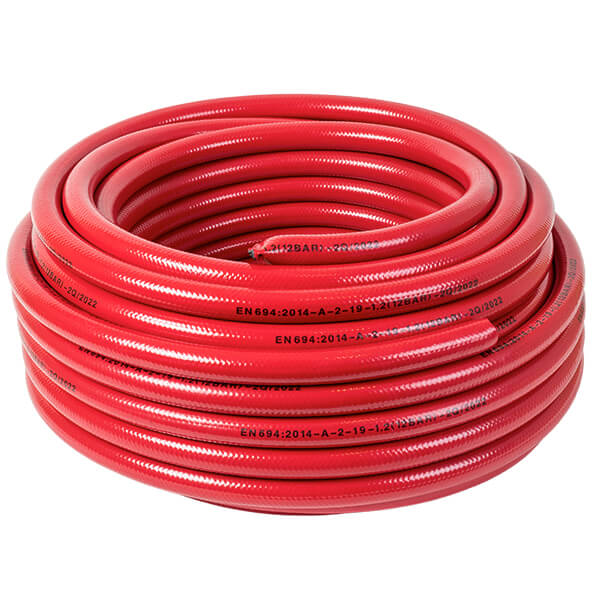
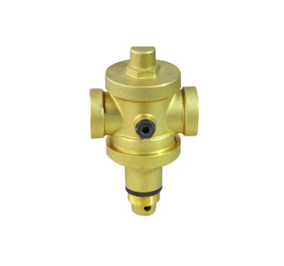

Fire Hose Tubing

Jet Spray Nozzle

Gate Valve

Flexible Inlet Hose

Lock Shield Valve

Pressure Reducing Valves
Automatic fire sprinkler systems also known as a wet pipe systems are widely regarded as the most effective method of controlling fires caused by a broad range of hazards. With a century of proven experience, fire sprinkler systems are very reliable and efficient to protect your people, business and assets
Automatic sprinkler heads activate when exposed to temperatures that would be excessive for the particular area being protected. When activated, a valve opens, releasing water stored in the attached piping. Heads activate individually, preventing water from being released in areas that are not threatened by fire.
Sprinkler systems can automatically detect a fire, transmit an alarm and control the fire. A glass bulb type sprinkler head will spray water into the room if sufficient heat reaches the bulb and causes it to shatter.
We offer Pendant, Upright, Sidewall and concealed sprinkler available in several different finishes, temperature ratings, and K-Factors to meet design requirements.
| Glass Bulb | Opening Temperature in °C | Temperature Rating °C |
|---|---|---|
| Orange | 57 | 57-77 |
| Red | 68 | 80-107 |
| Yellow | 79 | 121-149 |
| Green | 93-100 | 163-191 |
| Blue | 121-141 | 204-246 |
| Mauve/Purple | 163-182 | 260-302 |
| Black | 204-260 | 320-343 |
Quick Response
Standard Response
Pendant Sprinkler is a low profile yet durable design which utilizes a 5mm (Standard Response) or 3mm (Quick Response) frangible glass ampule as the thermo sensitive element. This sprinkler series is available in five temperature ratings, K – Factor and several finishes to meet many varying design requirements as shown below:
| Sl.No | K-Factor | Thread | Temperature |
|---|---|---|---|
| 1 | 2.8 (39 Metric) | 1/2" NPT | 135°F (57°C), 155°F (68°C), 175°F (79°C), 200°F (93°C), 286°F (141°C) |
| 2 | 4.2 (59 Metric) | 1/2" NPT | 135°F (57°C), 155°F (68°C), 175°F (79°C), 200°F (93°C), 286°F (141°C) |
| 3 | 5.6 (80 Metric) | 1/2" NPT | 135°F (57°C), 155°F (68°C), 175°F (79°C), 200°F (93°C), 286°F (141°C) |
| 4 | 7.8 (111 Metric) | 1/2" NPT | 135°F (57°C), 155°F (68°C), 175°F (79°C), 200°F (93°C), 286°F (141°C) |
| 5 | 8.1 (116 Metric) | 3/4" NPT | 135°F (57°C), 155°F (68°C), 175°F (79°C), 200°F (93°C), 286°F (141°C) |
Brass
Chrome
White Polyester
Quick Response
Standard Response
Upright Sprinkler is a low profile yet durable design which utilizes a 5mm (Standard Response) or 3mm (Quick Response) frangible glass ampule as the thermo sensitive element. This sprinkler series is available in five temperature ratings, K – Factor and several finishes to meet many varying design requirements as shown below:
| Sl.No | K-Factor | Thread | Temperature |
|---|---|---|---|
| 1 | 2.8 (39 Metric) | 1/2" NPT | 135°F (57°C), 155°F (68°C), 175°F (79°C), 200°F (93°C), 286°F (141°C) |
| 2 | 4.2 (59 Metric) | 1/2" NPT | 135°F (57°C), 155°F (68°C), 175°F (79°C), 200°F (93°C), 286°F (141°C) |
| 3 | 5.6 (80 Metric) | 1/2" NPT | 135°F (57°C), 155°F (68°C), 175°F (79°C), 200°F (93°C), 286°F (141°C) |
| 4 | 7.8 (111 Metric) | 1/2" NPT | 135°F (57°C), 155°F (68°C), 175°F (79°C), 200°F (93°C), 286°F (141°C) |
| 5 | 8.1 (116 Metric) | 3/4" NPT | 135°F (57°C), 155°F (68°C), 175°F (79°C), 200°F (93°C), 286°F (141°C) |
Brass
Chrome
White Polyester
Horizontal Sidewall
Vertical Sidewall
Horizontal Sidewall
Vertical Sidewall
Sidewall Sprinkler is a low profile yet durable design which utilizes a 5mm (Standard Response) or 3mm (Quick Response) frangible glass ampule as the thermo sensitive element. This sprinkler series is available in six temperature ratings, K – Factor, types and several finishes to meet many varying design requirements as shown below:
| Sl.No | K-Factor | Thread | Temperature |
|---|---|---|---|
| 1 | 2.8 (39 Metric) | 1/2" NPT | 135°F (57°C), 155°F (68°C), 175°F (79°C), 200°F (93°C), 286°F (141°C), 360°F (182°C) |
| 2 | 4.2 (59 Metric) | 1/2" NPT | 135°F (57°C), 155°F (68°C), 175°F (79°C), 200°F (93°C), 286°F (141°C), 360°F (182°C) |
| 3 | 5.6 (80 Metric) | 1/2" NPT | 135°F (57°C), 155°F (68°C), 175°F (79°C), 200°F (93°C), 286°F (141°C), 360°F (182°C) |
| 4 | 7.8 (111 Metric) | 1/2" NPT | 135°F (57°C), 155°F (68°C), 175°F (79°C), 200°F (93°C), 286°F (141°C), 360°F (182°C) |
| Sl.No | K-Factor | Thread | Temperature |
|---|---|---|---|
| 1 | 5.6 (80 Metric) | 1/2" NPT | 35°F (57°C), 155°F (68°C), 175°F (79°C), 200°F (93°C), 286°F (141°C) |
| 2 | 8.1 (116 Metric) | 1/2" NPT | 135°F (57°C), 155°F (68°C), 175°F (79°C), 200°F (93°C), 286°F (141°C) |
Brass
Chrome
White Polyester
Quick Response
Standard Response
Upright Sprinkler is a low profile yet durable design which utilizes a 5mm (Standard Response) or 3mm (Quick Response) frangible glass ampule as the thermo sensitive element. This sprinkler series is available in five temperature ratings, K – Factor and several finishes to meet many varying design requirements as shown below:
| Sl.No | K-Factor | Thread | Temperature |
|---|---|---|---|
| 1 | 5.6 (80 Metric) | 1/2" NPT | 135°F (57°C), 155°F (68°C), 175°F (79°C), 200°F (93°C), 286°F (141°C), 360°F (182°C) |
| 2 | 8.1 (116 Metric) | 3/4" NPT | 135°F (57°C), 155°F (68°C), 175°F (79°C), 200°F (93°C), 286°F (141°C), 360°F (182°C) |
Brass
Chrome
Quick Response
The Adjustable Concealed Pendent Sprinklers have a low profile, aesthetically pleasing design. This sprinkler series is available in four different temperature ratings, K – Factor, types and several finishes to meet many varying design requirements as shown below:
| Sl.No | K-Factor | Thread | Temperature |
|---|---|---|---|
| 1 | 2.8 (39 Metric) | 1/2" NPT | 135°F (57°C), 155°F (68°C), 175°F (79°C), 200°F (93°C) |
| 2 | 4.2 (59 Metric) | 1/2" NPT | 135°F (57°C), 155°F (68°C), 175°F (79°C), 200°F (93°C) |
| 3 | 8.1 (116 Metric) | 3/4" NPT | 135°F (57°C), 155°F (68°C), 175°F (79°C), 200°F (93°C) |
Chrome
White Polyester
IP Rating : IP30
Bright Brass
Fire Hose Tubing
Jet Spray Nozzle
Gate Valve
Flexible Inlet Hose
Lock Shield Valve
Pressure Reducing Valves
Building and Sprinkler Codes requires that each sprinkler system maintain spare sprinklers (one of each type and temperature) and spare wrench(s).
The High Pressure Alarm Check Valves are used in wet pipe fire sprinkler systems. They primarily serve a dual purpose in that they prevent a reverse flow of water through their bodies (non-return) and also provide for the use of a hydraulic fire alarm which is not dependent upon an electrical power supply for its operation.
A unique feature found on the Alarm valve is High Pressure 3", 4", 6" and 150mm Alarm Check Valves is the clapper being hinged to the hand hole cover for extreme ease of removal for inspection and service.
High Pressure Alarm Check Valves may be installed in both vertical and horizontal positions and trim can be provided for both variable and constant water supply pressures in either of these positions.
The body and cover of the High Pressure Alarm Check Valve is constructed of high tensile strength ductile iron.
All interior operating parts are machined from highly corrosive-resistant alloys, each having high strength and good wear resistance.
Rubber parts are of selective materials which have good abrasive resistance and long life expectancy in terms of resiliency.
The Retarding Chamber is an accessory which is used with variable pressure wet sprinkler systems where water motor alarms and/or pressure switches are used in conjunction with Globe's Alarm Check Valves. It serves primarily as a hydraulic time delay to prevent most false alarms associated with fluctuating water supply pressures. In situations where excessive water pressure surges occur, the Retarding Chamber is needed to collect excess water from the Alarm Check Valve and feed water back into the main drain, before activating the alarm. An additional retarding chamber could be needed if pressure surges exceed the capacity of one retarding chamber.
The body of the Retarding Chamber has considerable ductility to reduce damage in field handling. All interior operating parts are machined from highly corrosive-resistant alloys, each having high strength and good wear resistance.
Water Motor Alarm is a hydraulically operated outdoor alarm for use with fire protection systems. It is lightweight yet durable, and can be used in conjunction with alarm check, dry pipe, deluge, and preaction valves to sound a local alarm. This water-powered system eliminates the need for an electrical alarm and will operate even if electrical power is lost. Water Motor Alarm features a one-gong system, which sounds an alarm outside the building.
The Water Motor Alarm is suitable for mounting to any type of rigid wall .It is provided with a listed and approved strainer for use in the alarm line. The Gong, Gong Mount, and Water Motor Housing are fabricated from corrosion-resistant cast aluminum. The polymer drive bearings do not require lubrication. The WM utilizes a lightweight, impeller design, which can produce a very high decibel sound level. As water passes through the water motor, the impeller turns and the shaft rotates. The rotating shaft drives a striker assembly, which rings the gong, sounding a continuous alarm as long as the water flow continues.